|
|
回首頁 |
| 團體企畫書 |
成員 :
1411222012 陳品錞(組長)
1411222008 吳宜蓁
1411222050 黃銘紳
1411222055 李進光
1411107040 黎姵妘
指導老師 :
陳賢錫、徐豐明
壹、封面
貳、發想
參、遊戲類型
肆、故事大綱
伍、遊戲流程
一、遊戲玩法
二、關卡挑戰
三、動畫
四、陷阱障礙
陸、主角設計
柒、介面概念設計
捌、程式列表
玖、工作分配
拾、進度表
壹、封面
貳、發想
我們以2050年作為背景，描繪一個地球瀕臨崩壞的未來。面對怪物入侵危機，勇者被迫踏上尋找新家園的旅途。希望能透過這款跳躍型遊戲，讓玩家在操作角色向上躍升、躲避陷阱、挑戰高分的過程中，感受到探索未知的勇氣。隨著主角跳上魔豆、穿越宇宙，最終抵達一顆適合居住的超級星球，也象徵著人類在絕望中仍不放棄希望的精神。
參、遊戲類型
2D跳躍、動作冒險
肆、故事大綱
在2050年，世界面臨著一個末日危機，為了生存下去，一位勇敢的冒險者踏上了一段跳躍之旅，前往宇宙探索新生存地。他跳上魔豆、飛向宇宙，直到找到新的生存地，一路向上跳躍著，途中暗藏著危機，向上探索著未知的旅程，最終他找到了適合繼續生存的超級星球。
伍、遊戲流程
一、遊戲玩法
玩家操控一個小冒險者角色，控制角色向上跳躍，被怪物擊中必須重新向上(角色被擊中墜落時，仍然可以控制角色)，躲避陷阱，並挑戰自己能跳得多高，分數依照時間計算，挑戰自己的最高紀錄。
◎操作:按住滑動搖桿控制角色左右，手指點擊螢幕可向上跳躍(長按增加跳躍力)。
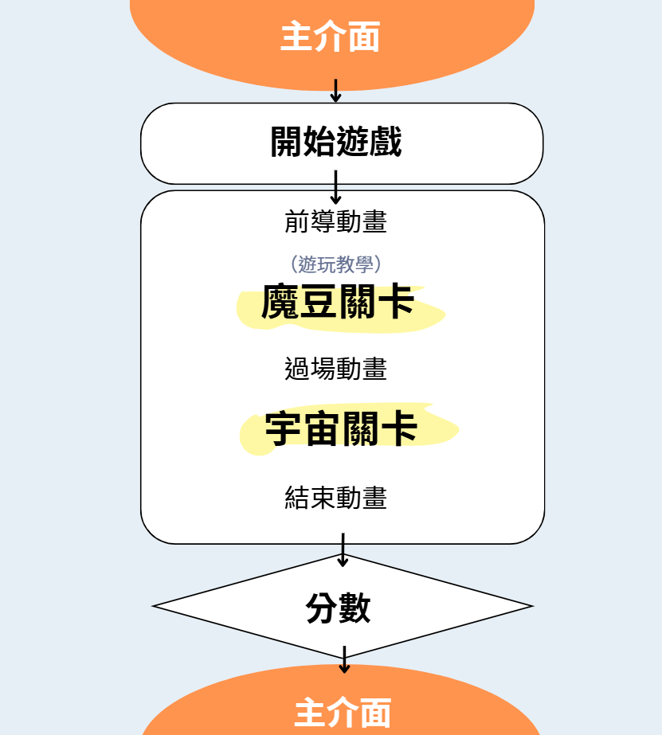
二、關卡挑戰
◎主要關卡：
分為魔豆、宇宙，隨著跳得越高，關卡的難度會增加，能跳到的平台更少或移動平台越快，出現更多陷阱和障礙。
|
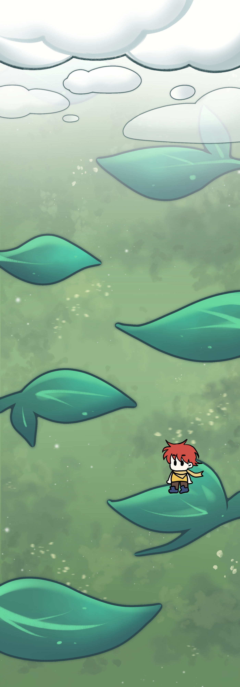 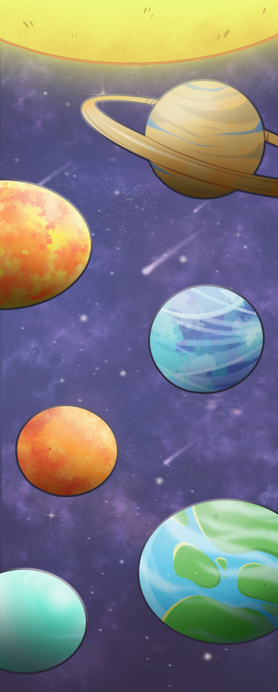 |
三、動畫
開場動畫 : 主角在尋求生存途中發掘了神奇魔豆，並在森林中下了它，出乎意外的，這棵魔豆迅速成長，成了他向上探險的道路。
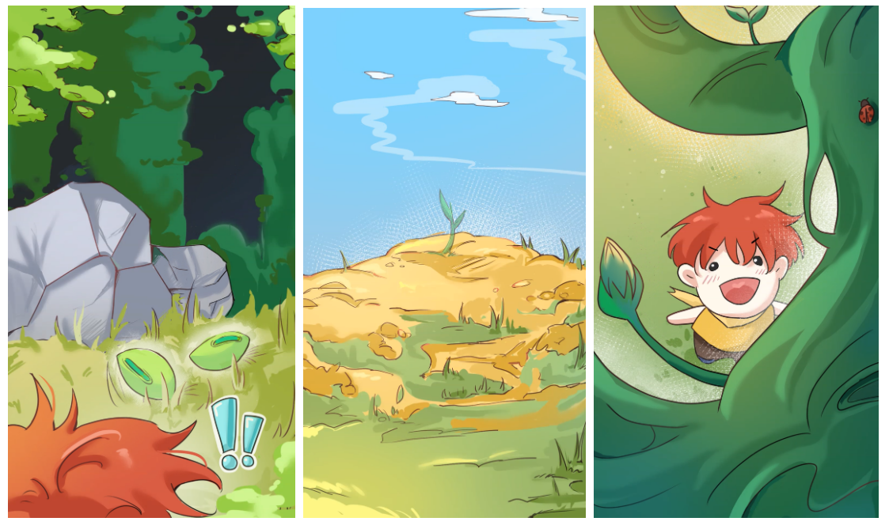
過場動畫：勇者搭乘火箭，意外墜落後，到達了宇宙。
|
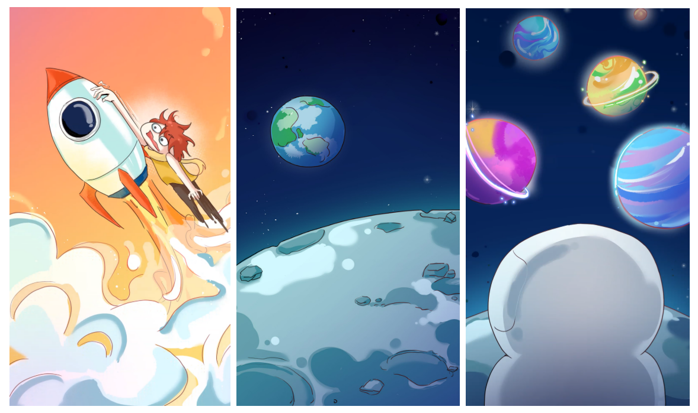 |
結束動畫：最終他找到了適合居住的超級星球，新的生存地。
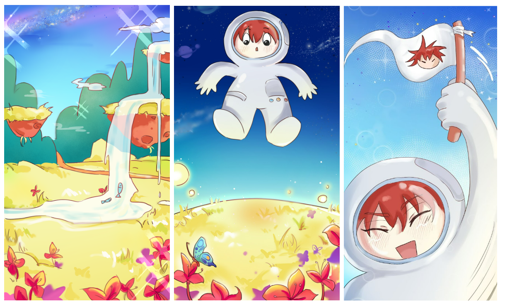
四、陷阱障礙
◎魔豆關卡
史萊姆:觸碰到史萊姆黏液會暫時無法行動。
飛鳥:飛鳥會遠程攻擊主角，扣遊玩積分。
熊怪:熊怪會使出熊掌攻擊，主角會飛出去，掉落到下方。
|
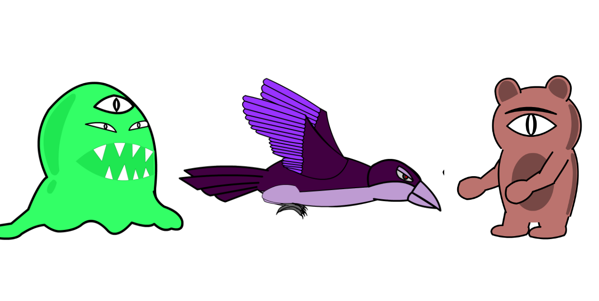 |
◎宇宙關卡
黑洞:會被隨機傳送到不同的地方。
外星人攻擊:會被外星人飛船載到下面的地方。
隕石:被隕石打到會飛出去並墜落。
|
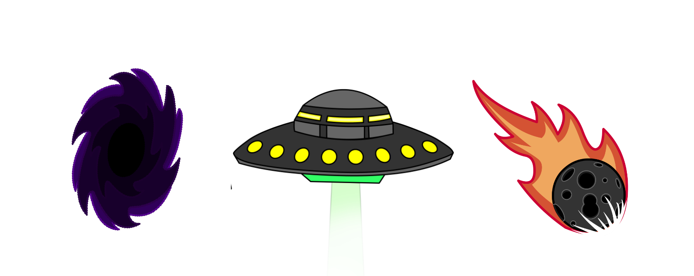 |
陸、主角設計
勇者(冒險者)，分別在魔豆關、宇宙關分別有不一樣的服裝。
|
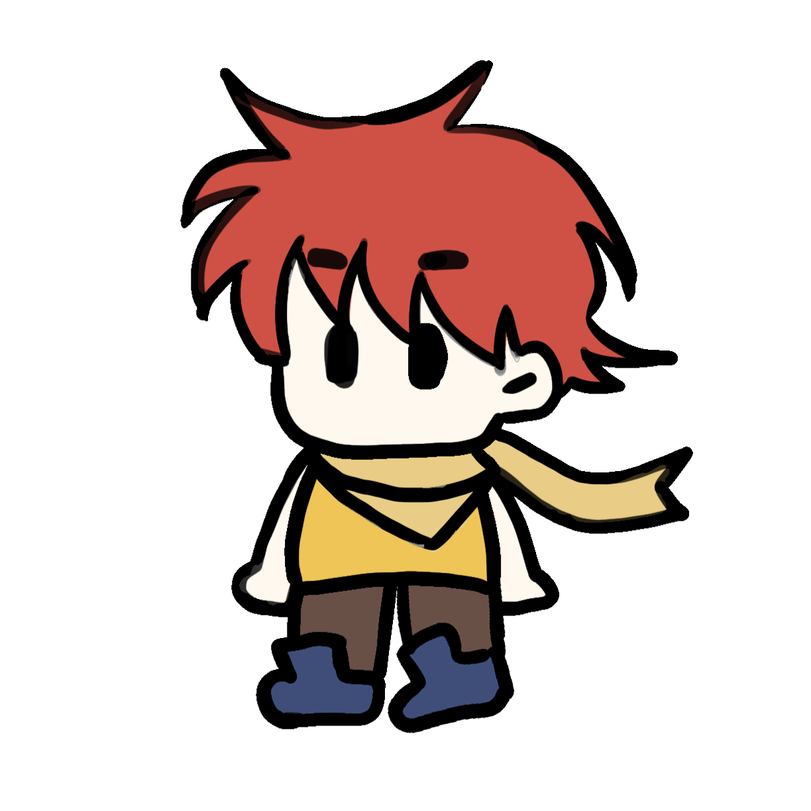 |
柒、介面概念設計
◎遊戲開始介面:以簡單的方式呈現開始遊戲與歷史紀錄。
.jpg)
◎遊戲中遊戲介面:主要有時間、暫停鍵，暫停鍵後有回主頁面跟繼續，畫面簡潔為主。
|
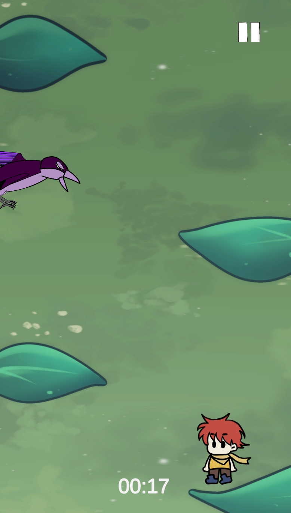 |
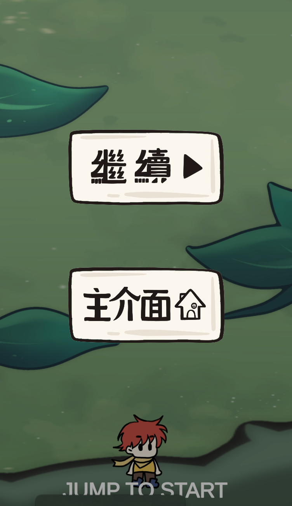 |
◎遊玩教學

◎分數
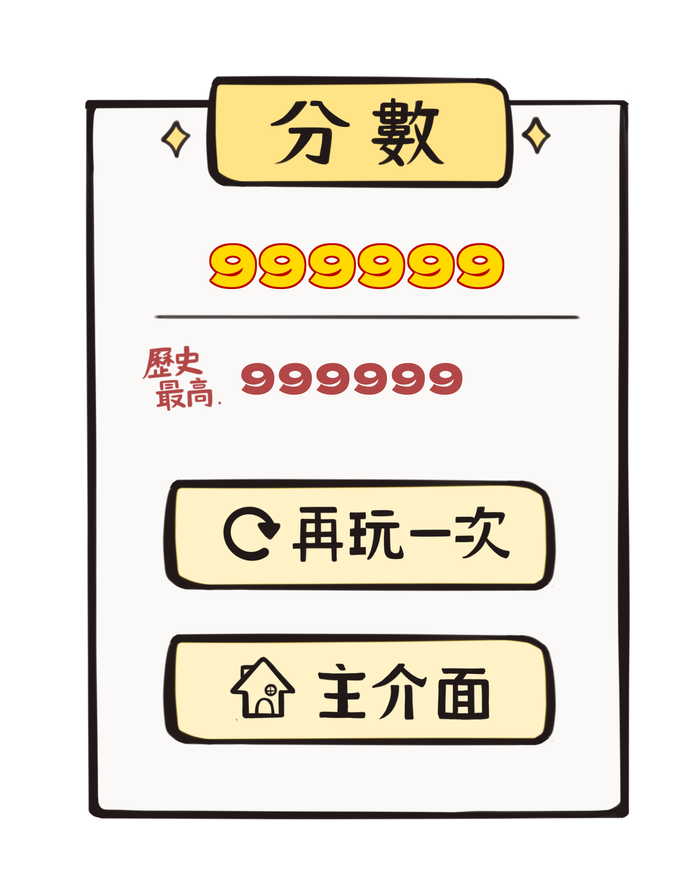
捌、程式列表
使用Unity製作。
1.角色跳躍機制
2.相機追蹤角色
3.積分機制
4.介面設定
5.動畫置入
6.循環背景
7.陷阱機制:史萊姆/飛鳥/熊怪/黑洞/外星人攻擊/隕石
◎設計組：
|
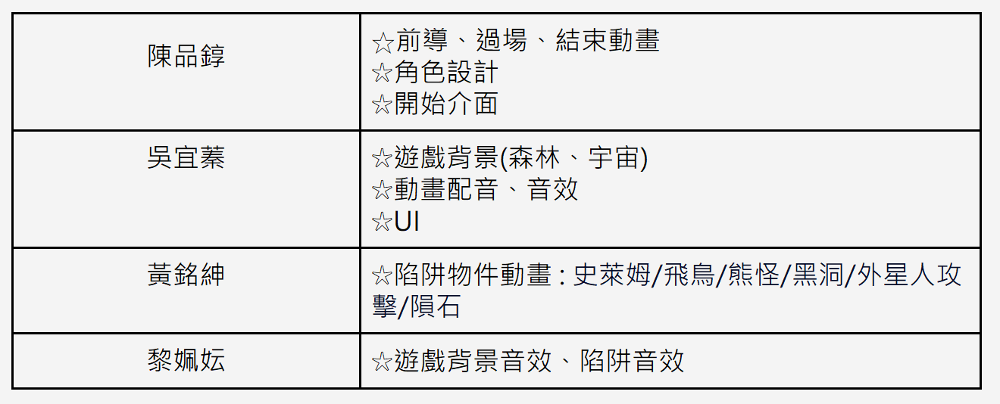 |
◎程式組：
|
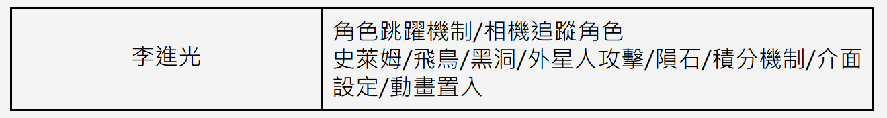 |
跳躍的勇者
|